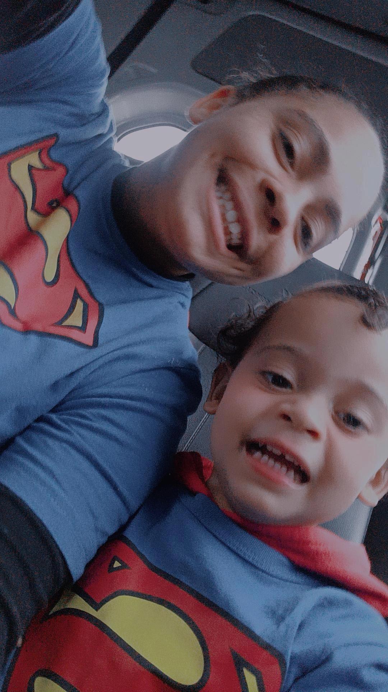
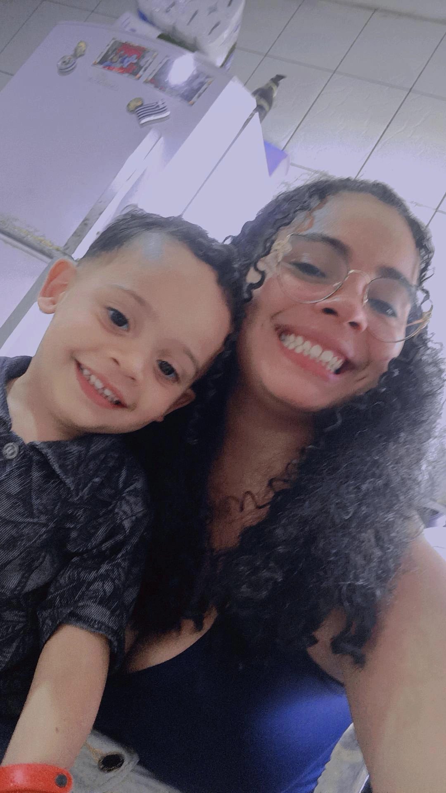
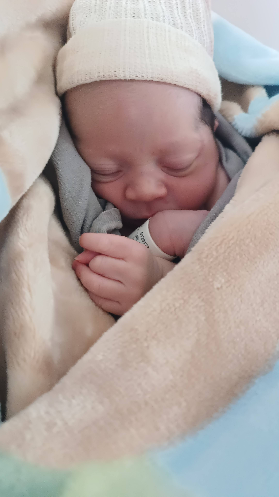
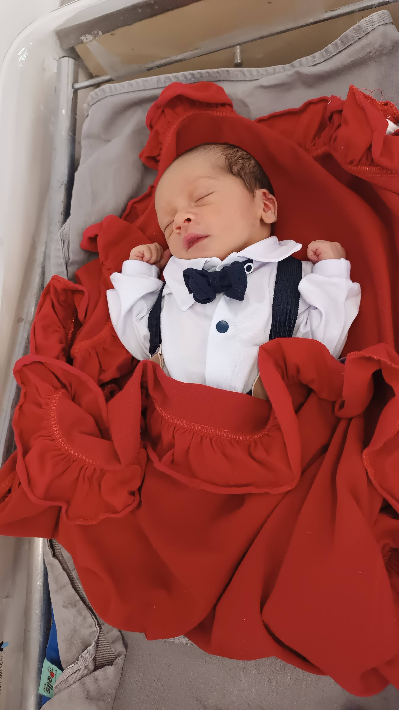
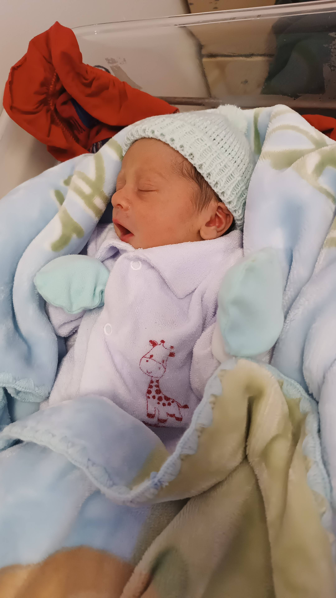

A aventura de ser mãe
Esta é uma pequena história que quero contar sobre mim e meu filho. Apesar de ele ter apenas 2 anos, nós já passamos por tantas situações que parece uma loucura. Não vou contar tudo, porque deixaria de ser um mini site, mas vou compartilhar nossa história de forma resumida.
Essa história vai conter:
- Amor
- Alegra
- Medos
- Reflexões
- Aprendizados


Como Tudo Começou
Olá, me chamo Alyne Cristina e vim contar um pouco sobre como é ser mãe, mas vamos começar lá do começo.
Conheci meu marido, Rogério, na escola, alguns meses antes da pandemia da COVID-19. Começamos a conversar e, depois de um tempo, começamos a namorar. Mas calma! Como estávamos em plena pandemia, ficamos juntos por cerca de um ano apenas por telefone e mensagens. Foi somente depois das vacinas que começamos a nos encontrar pessoalmente.
Em fevereiro de 2023, descobri que estava grávida, e ali começou uma das maiores aventuras da minha vida
O Dia em que Tudo Mudou
A Chegada do Anthony
Em 23 de outubro de 2023, nasceu a criança mais linda deste mundo: o Anthony.
Quando ele nasceu, senti um turbilhão de emoções ao mesmo tempo. Durante meses ele esteve na minha barriga e, de repente, estava ali, nos meus braços. Pude sentir um amor tão verdadeiro e tão forte que não consigo explicar em palavras. Posso apenas dizer que é uma das sensações mais maravilhosas que alguém pode sentir.


